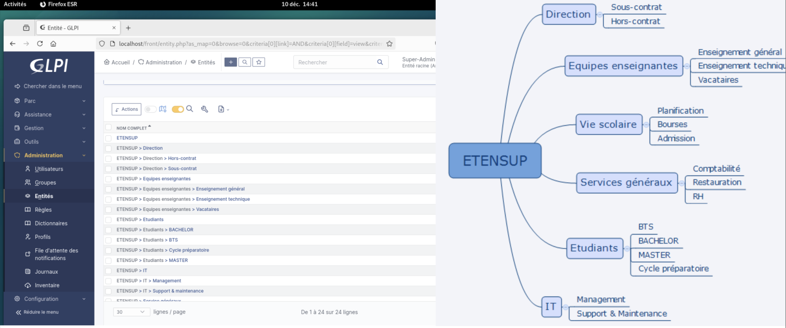
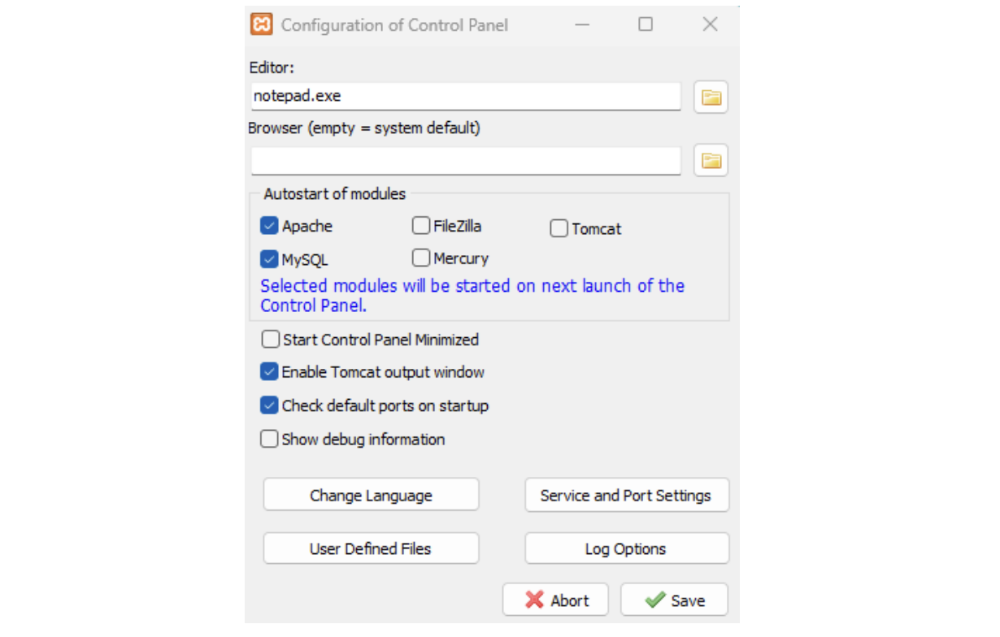
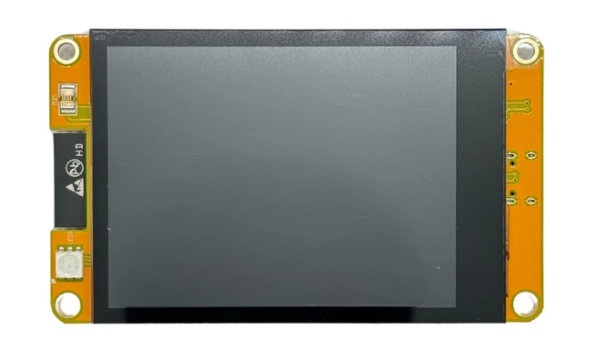

Administration, maintenance et optimisation des ressources SI
Gérer le patrimoine informatique consiste à gérer, sécuriser et maintenir l’ensemble des ressources numériques d’une organisation afin d’assurer leur bon fonctionnement et leur protection.
▸Recenser et identifier les ressources numériques
▸Exploiter des référentiels, normes et standards adoptés par le prestataire informatique
▸Mettre en place et vérifier les niveaux d’habilitation associés à un service
▸Vérifier les conditions de la continuité d’un service informatique
▸Gérer des sauvegardes
▸Vérifier le respect des règles d’utilisation des ressources numériques
Objectif : Recenser l'infrastructure de l'entreprise ETENSUP.

Création des organigrammes de l'entreprise sur GLPI
Objectif : Assurer la continuité du service.

Mise en place d'une relance automatique de l'application
Objectif : Assurer la continuité du service.

Mise en place d'une pile externe qui maintient l'afficheur à jour